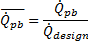
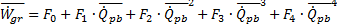
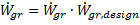
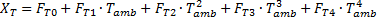
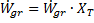
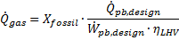
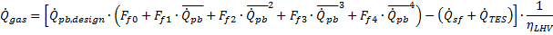

Power Block#
To view the Power Block page, click Power Block on the main window’s navigation menu. Note that for the empirical trough input pages to be available, the technology option in the Technology and Market window must be Concentrating Solar Power - Empirical Trough System.
The Power Block parameters describe the equipment in the system that converts thermal energy from the solar field or thermal energy storage system into electricity. The power block is based on a steam turbine that runs on a conventional Rankine power cycle and may or may not include fossil fuel backup. Power block components include a turbine, heat exchangers to transfer heat from the solar field or thermal energy storage system to the turbine, and a cooling system to dissipate waste heat. SAM considers the thermal energy storage system to be a separate component, which is described on the Thermal Storage page.
The input variables on the Power Block page are divided into two groups. The turbine ratings group determines the capacity of the power block, and the power cycle group defines the performance parameters of the reference turbine.
For a more detailed description of the model, please download the CSP trough reference manual from the SAM website.
Input Variable Reference#
Plant Characteristics#
- Design Gross Output (MWe)
The power cycle’s design output, not accounting for parasitic losses. SAM uses this value to size system components, such as the solar field area when you use the solar multiple to specify the solar field size.
- Estimated Gross to Net Conversion Factor
An estimate of the ratio of the electric energy delivered to the grid to the power cycle’s gross output. SAM uses the factor to calculate the system’s nameplate capacity for capacity-related calculations, including the estimated total cost per net capacity value on the Installation costs page, capacity-based incentives on the Incentives page, and the capacity factor reported in the results .
- Estimated Net Output at Design (MWe)
The power cycle’s nominal capacity, calculated as the product of the design gross output and estimated gross to net conversion factor. SAM uses this value to calculate the system’s rated capacity for capacity-related calculations, including the estimated total cost per net capacity value on the Installation costs page, capacity-based incentives on the Incentives page, and the capacity factor reported in the results .
System Availability#
System availability losses are reductions in the system’s output due to operational requirements such as maintenance down time or other situations that prevent the system from operating as designed.
Note
To model curtailment, forced outages or reduction in power output required by the grid operator, use the inputs on the Grid Limits page. The Grid Limits page is not available for all performance models. For the PV Battery model, battery dispatch is affected by the system availability losses. For the PVWatts Battery, Custom Generation Profile - Battery, and Standalone Battery models, battery dispatch ignores the system availability losses.
To edit the system availability losses, click Edit losses.
The Edit Losses window allows you to define loss factors as follows:
Constant loss is a single loss factor that applies to the system’s entire output. You can use this to model an availability factor.
Time series losses apply to specific time steps.
SAM reduces the system’s output in each time step by the loss percentage that you specify for that time step. For a given time step, a loss of zero would result in no adjustment. A loss of 5% would reduce the output by 5%, and a loss of -5% would increase the output value by 5%.
Power Cycle#
The variables in the power cycle group describe a reference steam turbine. SAM uses the reference turbine specifications to calculate the turbine output, and then scales the actual output based on the turbine rating variables. Each set of reference turbine specifications is stored in the reference turbine library.
- Current Power Block
Name of the reference turbine. Selecting a reference system determines the values of the other power cycle variables.
- Design Cycle Thermal Input (MWt)
The thermal energy required as input to the power block to generate the design turbine gross (electric) output. SAM uses the design turbine thermal input to calculate several power block capacity-related values, including the solar field size, power block design point gross output, and parasitic losses.
Design Cycle Thermal Input = Design Turbine Gross Output ÷ Rated Cycle Conversion Efficiency
- Rated Cycle Conversion Efficiency
Total thermal to electric efficiency of the reference turbine. Used to calculate the design turbine thermal input.
- Max Turbine Over Design Operation
The turbine’s maximum output expressed as a fraction of the design turbine thermal input. Used by the dispatch module to set the power block thermal input limits.
- Min Turbine Operation
The turbine’s minimum load expressed as a fraction of the design turbine thermal input. Used by the dispatch module to set the power block thermal input limits.
- Frac of Thermal Power for Startup
Fraction of the design turbine thermal input required to bring the system to operating temperature after a period of non-operation. Used by the dispatch module to calculate the required start-up energy.
- Boiler LHV Efficiency
The back-up boiler’s lower heating value efficiency. Used by the power block module to calculate the quantity of gas required by the back-up boiler.
- Max Thermal Input (MWt)
The maximum thermal energy that can be delivered to the power block by the solar field, thermal energy storage system or both.
Max Thermal Input = Design Cycle Thermal Input × (F4 × Max Turbine Over Design Operation*4**+ F3 × Max Turbine Over Design Operation³ + F2 × Max Turbine Over Design Operation² + F1 × Max Turbine Over Design Operation + F0)*
Where F0-4 are the Cycle Part-load Elec to Therm factors that you specify.
- Min Thermal Input (MWt)
The minimum thermal energy that can be delivered to the power block by the solar field, thermal energy storage system or both.
Max Thermal Input = Design Cycle Thermal Input × (F4 × Min Turbine Operation*4**+ F3 × Max Turbine Over Design Operation³ + F2 × Min Turbine Operation² + F1 × Min Turbine Operation + F0)*
Where F0-4 are the Cycle Part-load Elec to Therm factors that you specify.
- Cycle Part-load Therm to Elec
Factors for the turbine thermal-to-electric efficiency polynomial equation. Used to calculate the design point gross output, which is the portion of the power block’s electric output converted from solar energy before losses. See Power Block Simulation Calculations for details.
- Cycle Part-load Elec to Therm
Factors for turbine’s part load electric-to-thermal efficiency polynomial equation. Used to calculate the energy in kilowatt-hours of natural gas equivalent required by the backup boiler. SAM dispatches the backup boiler based on the fossil-fill fraction table in the thermal storage dispatch parameters on the Thermal Storage page .
- Cooling Tower Correction
Cooling tower correction factor. Used to calculate the temperature correction factor that represents cooling tower losses. To model a system with no cooling tower, set F0 to 1, and F1 = F2 = F3 = F4 =0.
- Temperature Correction Mode
In the dry bulb mode, SAM calculates a temperature correction factor to account for cooling tower losses based on the ambient temperature from the weather data set. In wet bulb mode, SAM calculates the wet bulb temperature from the ambient temperature and relative humidity from the weather data.
Power Cycle Library Options#
The power cycle library includes six reference turbines. See Working with Libraries for information about managing libraries.
The reference turbines include five conventional Rankine-cycle steam turbines in a range of sizes, and one organic Rankine-cycle turbine. Conventional Rankine-cycle turbines are similar to those used in coal, nuclear, or natural gas power plants. A heat exchanger transfers energy from the solar field’s heat transfer fluid to generate steam that drives the turbine. The organic Rankine-cycle turbine operates on the same principle as the conventional turbine, but uses an organic fluid, typically butane or pentane, to run the turbine instead of water.
Table . Power cycle reference systems.
Reference System |
Approximate Solar Field Size Range m 2 |
Approximate Operating Temperature ºC |
Suggested Modeling Application |
|---|---|---|---|
APS Ormat 1 MWe 300C |
10,000 |
300 |
Organic Rankine-cycle power block |
Nexant 450C HTF |
450 |
High-temperature heat transfer fluid (molten salt) |
|
Nexant 500C HTF |
500 |
High-temperature heat transfer fluid (molten salt) |
|
SEGS 30 MWe Turbine |
180,000 - 230,000 |
300 - 400 |
Typical applications |
SEGS 80 MWe Turbine |
460,000 - 480,000 |
400 |
Typical applications |
Siemens 400C HTF |
400 |
High-temperature heat transfer fluid |
When you choose a turbine from the reference system library, SAM changes the values of the Power Cycle variables. The following table shows the power cycle parameters for the standard reference systems. Note that you can use any value for the Rated Turbine Net Capacity and Design Turbine Gross Output variables, SAM will use the reference system parameters with the rated and design turbine parameters.
Table . Reference system parameters.
Parameter Name |
SEGS 30 |
SEGS 80 |
APS ORC |
Nexant 450 |
Nexant 500 |
Siemens 400 |
|---|---|---|---|---|---|---|
Estimated Net Output at Design |
30 |
80 |
1 |
100 |
100 |
50 |
Design Gross Output |
35 |
89 |
1.160 |
110 |
110 |
55 |
Design Cycle Thermal Input |
93.3 |
235.8 |
5.600 |
278.0 |
269.9 |
147.2 |
Rated Cycle Conversion Efficiency |
0.3749 |
0.3774 |
0.2071 |
0.3957 |
0.4076 |
0.3736 |
Max Turbine Over Design Operation |
1.15 |
1.15 |
1.15 |
1.15 |
1.15 |
1.15 |
Min Turbine Operation |
0.15 |
0.15 |
0.15 |
0.15 |
0.15 |
0.15 |
Cycle Part-load Therm to Elec F0 |
-0.0571910 |
-0.0377260 |
-0.1593790 |
-0.0240590 |
-0.0252994 |
-0.0298 |
Cycle Part-load Therm to Elec F1 |
1.0041000 |
1.0062000 |
0.9261810 |
1.0254800 |
1.0261900 |
0.7219 |
Cycle Part-load Therm to Elec F2 |
0.1255000 |
0.0763160 |
1.1349230 |
0.0000000 |
0.0000000 |
0.7158 |
Cycle Part-load Therm to Elec F3 |
-0.0724470 |
-0.0447750 |
-1.3605660 |
0.0000000 |
0.0000000 |
-0.5518 |
Cycle Part-load Therm to Elec F4 |
0.0000000 |
0.0000000 |
0.4588420 |
0.0000000 |
0.0000000 |
0.1430 |
Cycle Part-load Elec to Therm F0 |
0.0565200 |
0.0373700 |
0.1492050 |
0.0234837 |
0.0246620 |
0.044964 |
Cycle Part-load Elec to Therm F1 |
0.9822000 |
0.9882300 |
0.8521820 |
0.9751230 |
0.9744650 |
1.182900 |
Cycle Part-load Elec to Therm F2 |
-0.0982950 |
-0.0649910 |
-0.3247150 |
0.0000000 |
0.0000000 |
-0.563880 |
Cycle Part-load Elec to Therm F3 |
0.0595730 |
0.0393880 |
0.4486300 |
0.0000000 |
0.0000000 |
0.467190 |
Cycle Part-load Elec to Therm F4 |
0.0000000 |
0.0000000 |
-0.1256020 |
0.0000000 |
0.0000000 |
-0.130090 |
You can use any of the built-in power cycle options to model most systems expected to run at or near the power block’s design point for most operating hours. You can specify your own power cycle if you have a set of part load coefficients from the manufacturer, or if you have calculated coefficients using power plant simulation or equation solving software. The part load equation is a fourth-order or lower polynomial equation that describes the relationship between power cycle efficiency and operating load.
Power Block Simulation Calculations#
The equations below show how SAM uses the Power Cycle parameters during the simulation to calculate the thermal energy delivered to the power block, Qpb. You can use this information to develop your own set of coefficients instead of coefficients from the power cycle library.

This is the non-dimensional thermal energy into the power block. This fractional value is input into the Cycle Part-load Therm to Elec polynomial equation that describes non-dimensional net electric output as a function of load:

This non-dimensional gross cycle output is multiplied by the design-point gross cycle output to get the preliminary dimensional gross power output:

The gross power output is also adjusted by the ambient temperature using the Cooling Tower Correction polynomial. It generally follows the same form as the polynomial for load shown above, except the non-dimensional load term (Qpb) is replaced by the actual wet or dry-bulb temperature in units of °C. The temperature adjustment factor is calculated as follows:

The gross power cycle output is then multiplied by the temperature correction factor to increase or decrease the total power cycle productivity.

The Cycle Part-load Elec to Therm polynomial equation is used to determine the performance and fuel consumption of the fossil backup system. Note that this relationship is only used when the fossil backup system is running and is not part of the normal solar-to-electric conversion process. The formula for obtaining heat input from a fossil backup using the polynomial coefficients depends on whether the fossil backup in combination with thermal storage and energy from the solar field can meet the design-point thermal input of the power cycle. If the total thermal input including fossil backup meets the thermal load requirement for the power cycle, the fuel usage is calculated at the design-point as follows:

The fraction of the thermal load that is supplied by fossil energy is indicated as Xfossil in this equation, and the lower-heating-value efficiency of the fossil source is ηLHV. In cases where the total thermal input to the power cycle falls short of the amount required to power the cycle at full load, a polynomial equation with user-defined coefficients is used to calculate the conversion efficiency.

In this case, the total non-dimensional energy to the power cycle Qpb is equal to the sum of the contributions from thermal storage, the solar field, and the fossil backup. Consequently, the non-fossil contributions are subtracted after the polynomial result has been applied. The total fuel consumption is calculated by converting from thermal energy to fuel usage with the lower-heating-value efficiency.